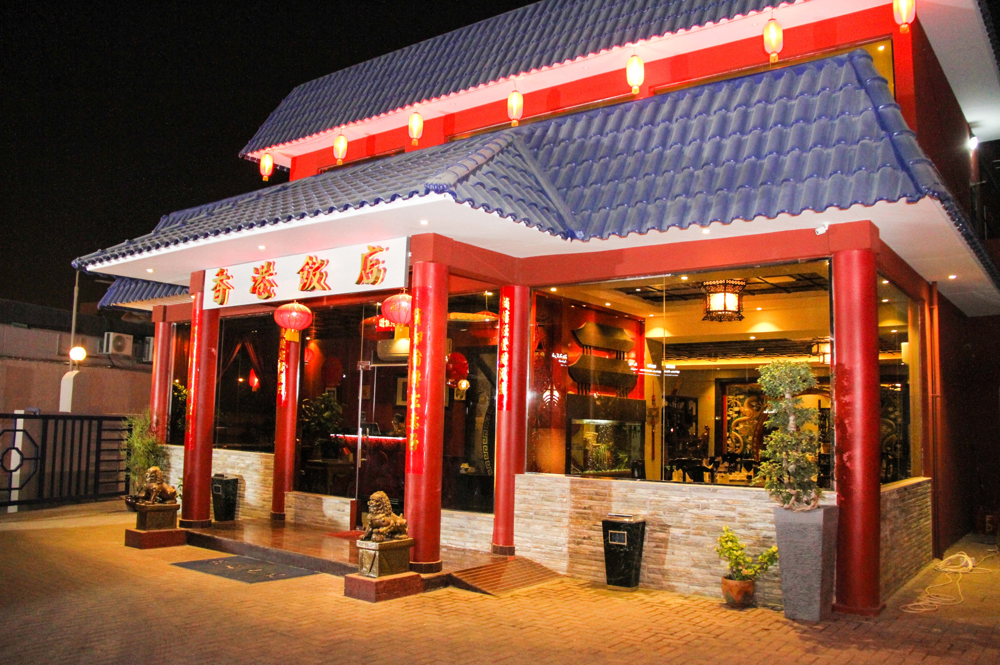
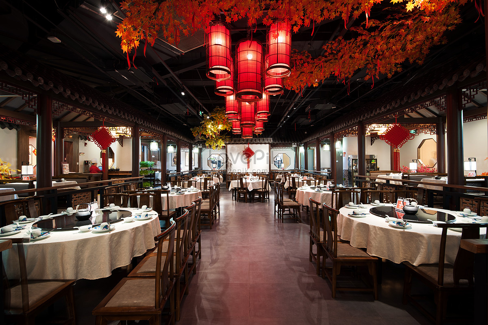
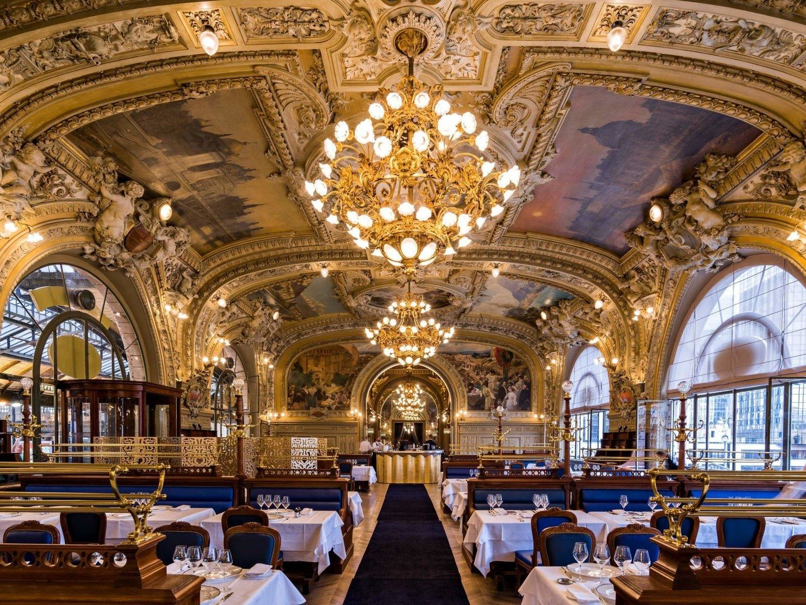
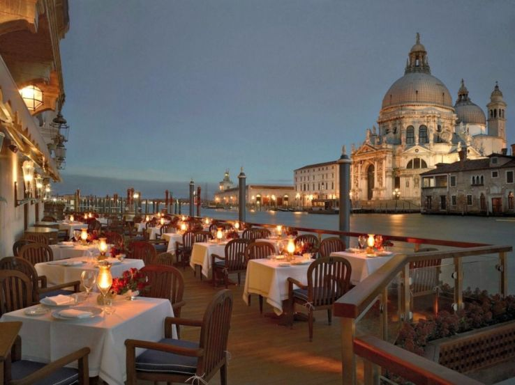
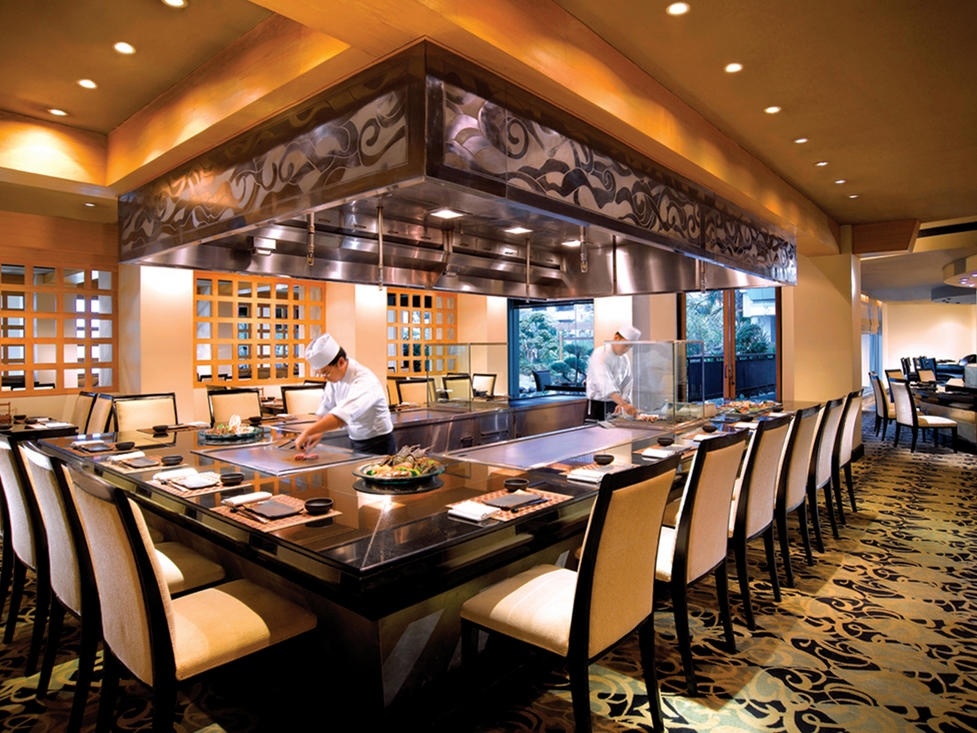
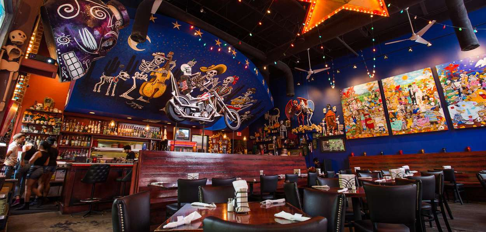

Лучшие рестораны мира
Китайская кухня
-

Шанхайская Легенда
Китайский ресторан, который сочетает традиционные китайские рецепты с инновациями современной гастрономии. Здесь подают утку по-пекински, димсамы и лучшие морепродукты.
-

Небесный Вкус
Ресторан с уникальными блюдами китайской кухни, включая супы с морепродуктами и жареный рис.
Европейская кухня
-

Бистро в Париже
Незаменимый ресторан для любителей французской кухни. От классической утки с апельсиновым соусом до вкуснейших круассанов.
-

Римский вкус
Традиционные блюда Италии, включая пасту и пиццу, приготовленные по семейным рецептам.
Другие кухни
-

Суши и Сашими
Японский ресторан, известный своими свежими суши и сашими, подаваемыми с морепродуктами, пойманными в тот же день.
-

Тортилья
Мексиканский ресторан, в котором подают восхитительные такос и гуакамоле, приготовленные по традиционным рецептам.